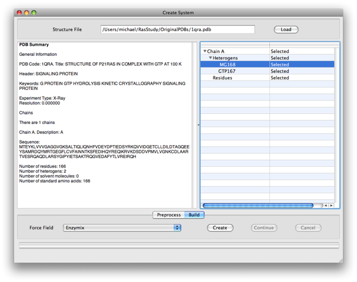

Creating a System
Systems are one of the required inputs to any simulation based calculation so here's how to make (or build) one.

To build a system:
- In the main menu go to Object->New->System. This opens the system builder.
- Click 'Load' and choose a PDB file.
- If you have an internet connection you can type the four letter pdb code of a protein and click 'Load' - Adun will fetch it for you.
- Choose the parts of the pdb you want to be in your system from the selection menu.
- Choose a force-field.
- Click Create.